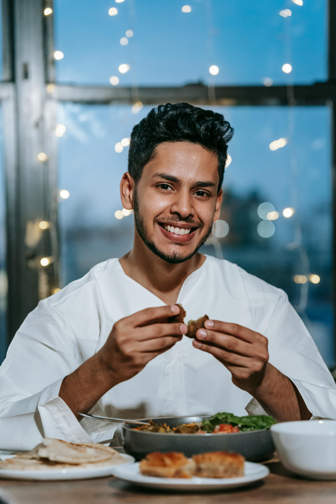
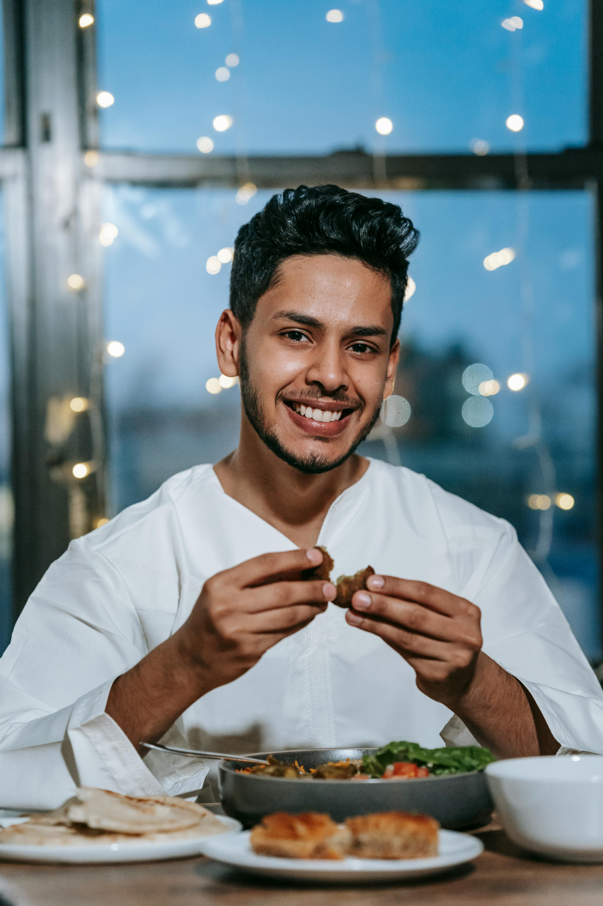

Step 1: Local Farms


All the food grown on the farm is grown without the use of chemicals or pesticides and is 100% natural and fresh.
Step 2: Hand-Picked Quality


All our produce is hand-picked by our farmers, ensuring quality. It is also personally inspected to make sure you get the best quality food.
Step 3: Fresh Delivery


Our fresh produce is carefully loaded and transported to ensure it reaches you in the best condition.
Step 4: Preparation by Expert Chefs


Our expert chefs prepare the ingredients with care, creating delicious and healthy dishes for you to enjoy.
Step 5: Enjoying the Meal
 

Our customers enjoy the fresh, delicious, and healthy vegetarian meals that are good for you and the planet.